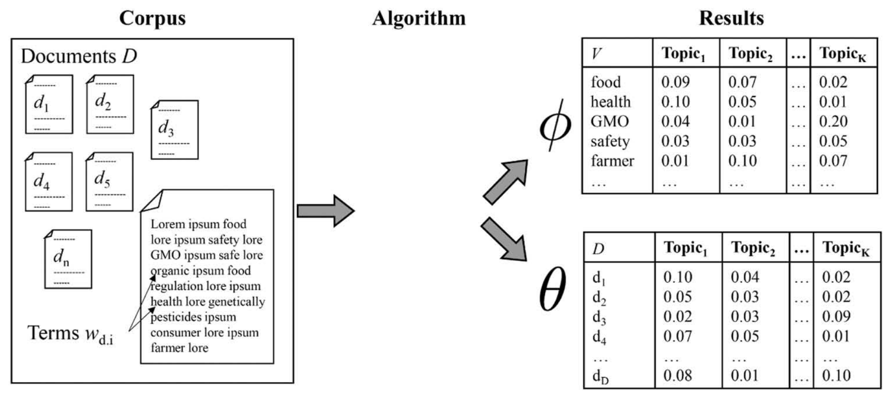
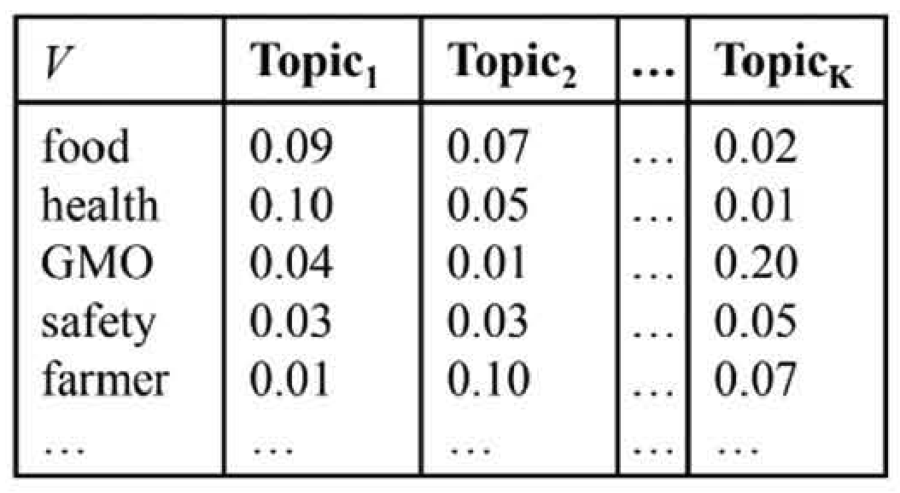
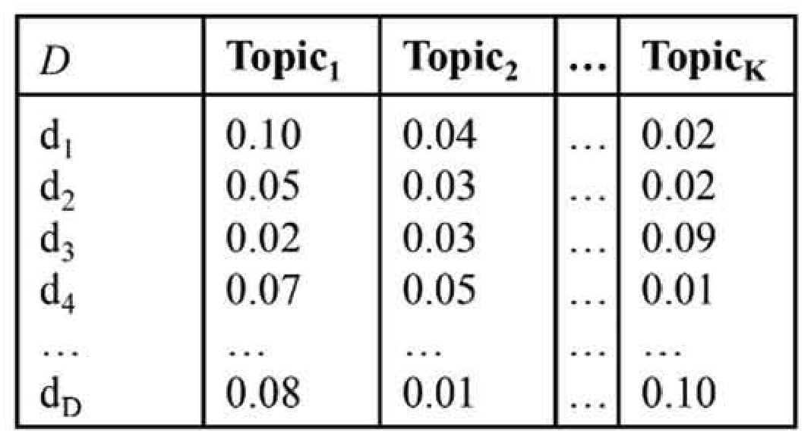
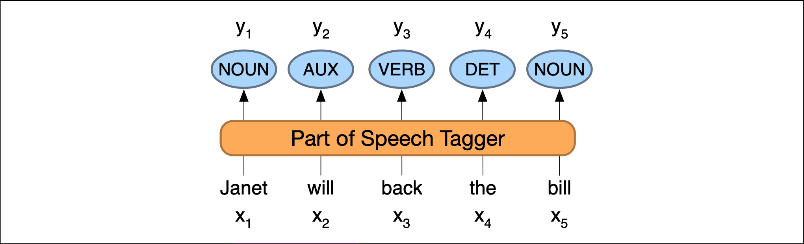
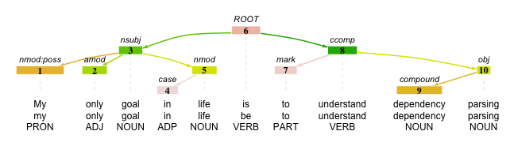

| Session | Datum | Topic | Presenter |
|---|---|---|---|
| 📂 Block 1 | Introduction | ||
| 1 | 23.10.2024 | Kick-Off | Christoph Adrian |
| 2 | 30.10.2024 | DBD: Overview & Introduction | Christoph Adrian |
| 3 | 06.11.2024 | 🔨 Introduction to working with R | Christoph Adrian |
| 📂 Block 2 | Theoretical Background: Twitch & TV Election Debates | ||
| 4 | 13.11.2024 | 📚 Twitch-Nutzung im Fokus | Student groups |
| 5 | 20.11.2024 | 📚 (Wirkungs-)Effekte von Twitch & TV-Debatten | Student groups |
| 6 | 27.11.2024 | 📚 Politische Debatten & Social Media | Student groups |
| 📂 Block 3 | Method: Natural Language Processing | ||
| 7 | 04.12.2024 | 🔨 Text as data I: Introduction | Christoph Adrian |
| 8 | 11.12.2024 | 🔨 Text as data II: Advanced Methods | Christoph Adrian |
| 9 | 18.12.2024 | 🔨 Advanced Method I: Topic Modeling | Christoph Adrian |
| No lecture | 🎄Christmas Break | ||
| 10 | 08.01.2025 | 🔨 Advanced Method II: Machine Learning | Christoph Adrian |
| 📂 Block 4 | Project Work | ||
| 11 | 15.01.2025 | 🔨 Project work | Student groups |
| 12 | 22.01.2025 | 🔨 Project work | Student groups |
| 13 | 29.01.2025 | 📊 Project Presentation I | Student groups (TBD) |
| 14 | 05.02.2025 | 📊 Project Presentation & 🏁 Evaluation | Studentds (TBD) & Christoph Adrian |
🔨 Advanced Methods
Session 08
11.12.2024
Seminarplan
Agenda
Machine Learning, (Un-)Supervised
Theoretische Grundlage für Topic Modeling & Sentiment Analysis
Possibilities over possibilities
Überblick über verschiedene Methoden der Textanalyse (Grimmer & Stewart, 2013)

Clusteranalyse on 💉
Grundidee des Topic Modelings
„computational content-analysis technique […] used to investigate the “hidden” thematic structure of […] texts” (Maier et al., 2018, p. S.93)
Verfahren des unüberwachten maschinellen Lernens, das sich daher insbesondere zur Exploration und Deskription großer Textmengen eignet
Themen werden strikt auf Basis von Worthäufigkeiten in den einzelnen Dokumenten vermeintlich objektiv berechnet, ganz ohne subjektive Einschätzungen und damit einhergehenden etwaigen Verzerrungen
Bekanntesten dieser Verfahren sind LDA (Latent Dirichlet Allocation) sowie die darauf aufbauenden CTM (Correlated Topic Models) und STM (Structural Topic Models)
Vom Korpus zum Themenmodell
Prozess des Topic Modelings nach Maier et al. (2018)
Prominente Wörter eines Themas
Vorstellung der Word-topic oder Phi-Matrix
Bedingte Wahrscheinlichkeit (beta), mit der Features in Themen prävalent sind
Wortlisten, die Themen beschreiben (“Top Features”)

Zugehörige Dokumente eines Themas
Vorstellung der Document-topic oder Theta-Matrix
Bedingte Wahrscheinlichkeit (gamma), mit der Themen in Dokumenten prävalent sind
Dokumentenlisten, die Themen beschreiben (“Top Documents”)

Themenmodelle sind …
Promises & Pitfalls von Themenmodellen
- probabilistisch ➜ Zuordnung von Wahrscheinlichkeiten, nicht eindeutigen Klassen
- Modell sagt nicht eindeutig, welches das „eine“ Thema je Dokument ist oder wie ein Thema zu interpretieren ist ➜ es gibt nur (probabilistische) Hinweise.
- generative ➜ Prozess findet das statistische „passendste“ Modell, um unseren Korpus zu „generieren“
- Modell läuft in iterativen Schlaufen immer und immer wieder durch, bis eine “optimale” Lösung gefunden wurde
- Aber: Es gibt z.T. nicht-deterministische (d.h. je nach Einstellungen unterschiedliche) Lösungen.
Beyond LDA
Verschiedene Ansätze der Themenmodellierung
- Latent Dirichlet Allocation [
LDA] (Blei et al., 2003) ist ein probabilistisches generatives Modell, das davon ausgeht, dass jedes Dokumentin einem Korpus eine Mischung von Themen ist und jedes Wort im Dokument einem der Themen des Dokuments zuzuordnen ist. - Structural Topic Modeling [
STM] (Roberts et al., 2016; Roberts et al., 2019) erweitert LDA durch die Einbeziehung von Kovariaten auf Dokumentenebene und ermöglicht die Modellierung des Einflusses externer Faktoren auf die Themenprävalenz. - Word embeddings (
Word2Vec(Mikolov et al., 2013) ,Glove(Pennington et al., 2014)) stellen Wörter als kontinuierliche Vektoren in einem hochdimensionalen Raum dar und erfassen semantische Beziehungen zwischen Wörtern basierend auf ihrem Kontext in den Daten. - Topic Modeling mit Neural Networks (
BERTopic(Devlin et al., 2019),Doc2Vec(Le & Mikolov, 2014)) nutzt Deep Learning-Architekturen, um automatisch latente Themen aus Textdaten zu lernen
Opinion matters
Sentimentanalyse: Einführung und Anwedungsfälle
Anwendung von Natural Language Processing (NLP), Textanalyse und Computational Linguistics, um
- subjektive Informationen aus Texten zu extrahieren
- Meinung, Einstellung oder Emotionen zu bestimmten Themen oder Entitäten zu bestimmen
Wichtige Anwendungsgebiete sind Marketinganalysen, Produktbewertungen, politische Meinungsforschung und soziale Medien.
The very good, the good and the ugly
Verschiedene Methode der Sentimentanalyse
- Regelbasierte Ansätze: Verwenden von definierten Regeln und Wörterbüchern.
- Maschinelles Lernen: Verwendung von Klassifikatoren wie Naive Bayes, SVM.
- Deep Learning: Einsatz von neuronalen Netzen wie RNNs oder Transformers.
Welche Aspekte werden untersucht?
- Polarität: positive, negative, neutrale.
- Subjektfunktion: Wer spricht? Wessen Meinung?
- Intensität: Stärke des Ausdrucks der Meinung.
Out of the box or DIY?
Werkzeuge und Tools für Sentimentanalyse
- Linguistic Inquiry and Word Count [LIWC] (Tausczik & Pennebaker, 2009): Textanalysesoftware-Tool & Off-the-shelf-Dictionary.
- Valence Aware Dictionary and sEntiment Reasoner [VADER] (Hutto & Gilbert, 2014): Regelbasierte Sentimentanalyse-Tool, das speziell für Social Media Texte entwickelt wurde
- TextBlob: Python-Bibliothek für Textverarbeitung, die auch Sentimentanalyse unterstützt.
- Commercial Tools: IBM Watson, Google Cloud Natural Language API, Microsoft Text Analytics.
ABER: Zunehmender Einsatz von Transformer-Modellen wie BERT (Devlin et al., 2019) und GPT für genauere Analysen.
Co-Occurence Analyse
Ngrams, Part-of-Speech-Tagging & Dependency Parsing
Quick reminder
Datengrundlage für die heutige Sitzung
# Create corpus
corp_transcripts <- transcripts %>%
quanteda::corpus(
docid_field = "id_sequence",
text_field = "dialogue"
)
# Tokenize corpus
toks_transcripts <- corp_transcripts %>%
quanteda::tokens(
remove_punct = TRUE,
remove_symbols = TRUE,
remove_numbers = TRUE,
remove_url = TRUE,
split_hyphens = FALSE,
split_tags = FALSE
) %>%
quanteda::tokens_remove(
pattern = quanteda::stopwords("en")
)Und für die Chats
Datengrundlage für die heutige Sitzung
Better bag-of-words
Co-Occurence Verfahren und Ihre Einsatzgebiet
Annahme von bag-of-words Modellen (Inhalte eines Text lassen sich vollständig durch die Häufigkeit der in ihm vorkommenden Wörter beschreiben) problematisch
- Verbessung durch komplexere Verfahren bzw. Repräsentationen, wie z.B. Ngrams, Keywords-in-Context, Collocations, Semantische Netzwerke etc.
- Potentielle Anwendungsfälle:
- Textbereinigung, z.B. Entfernung von Duplikaten via ngram-shingling (Nicholls, 2019)
- Textanalyse, z.B. Stereotypen (Arendt & Karadas, 2017), Labeling, Frames (Ruigrok & Atteveldt, 2007)
Häufige Wortkombinationen
Ngrams: Sequenzen von N aufeinanderfolgenden Token
toks_transcripts %>%
quanteda::tokens_ngrams(n = 2) %>%
quanteda::dfm() %>%
quanteda.textstats::textstat_frequency() %>%
head(25) feature frequency rank docfreq group
1 know_know 1337 1 49 all
2 t-mobile_t-mobile 864 2 6 all
3 donald_trump 755 3 461 all
4 going_say 666 4 30 all
5 say_going 661 5 35 all
6 saying_bad 558 6 4 all
7 bad_saying 553 7 3 all
8 kamala_harris 494 8 333 all
9 vice_president 429 9 376 all
10 curious_curious 373 10 7 all
11 sekunden_pause 354 11 266 all
12 right_now 269 12 234 all
13 united_states 268 13 211 all
14 feel_like 230 14 164 all
15 oh_oh 229 15 10 all
16 like_know 208 16 133 all
17 president_trump 203 17 178 all
18 like_like 191 18 144 all
19 president_harris 186 19 179 all
20 lot_people 181 20 138 all
21 know_like 168 21 109 all
22 american_people 163 22 118 all
23 oh_god 154 23 139 all
24 just_like 153 24 129 all
25 former_president 141 25 115 allStatistisch häufige Wortkombinationen
Kollokationen: Identifikation von bedeutungsvollen Wortkombinationen
toks_transcripts %>%
quanteda.textstats::textstat_collocations(
size = 2,
min_count = 5
) %>%
head(25) collocation count count_nested length lambda z
1 know know 1337 0 2 3.890787 98.31370
2 saying bad 558 0 2 6.503305 81.19215
3 bad saying 553 0 2 6.481795 80.98625
4 going say 666 0 2 4.555737 80.92246
5 say going 661 0 2 4.562963 80.82524
6 donald trump 755 0 2 7.422847 75.19267
7 kamala harris 494 0 2 7.873933 68.88003
8 vice president 429 0 2 7.258104 56.72753
9 oh oh 229 0 2 4.679549 54.95066
10 right now 269 0 2 3.996328 53.27167
11 senator vance 129 0 2 6.583164 49.48173
12 little bit 132 0 2 8.268099 45.80914
13 president harris 186 0 2 4.027681 45.69845
14 oh god 154 0 2 6.175930 44.94423
15 years ago 102 0 2 6.436807 43.06424
16 tim walz 90 0 2 7.588398 43.05596
17 president trump 203 0 2 3.468589 42.70406
18 four years 100 0 2 6.381600 42.53221
19 health care 136 0 2 7.400206 41.83123
20 white house 85 0 2 8.071701 41.52827
21 donald trump's 132 0 2 6.408658 41.05938
22 former president 141 0 2 5.790480 41.04486
23 curious curious 373 0 2 11.836611 40.77202
24 governor walz 77 0 2 6.512020 39.65499
25 two minutes 84 0 2 6.490910 39.39074Spezifische Token plus Kontext
Keywords-in-Context (KWIC): Unmittelbarer Wortkontext ohne statistische Gewichtung
Keyword-in-context with 10 matches.
[p1_s0018, 29] opportunity economy thing | know | shortage homes housing
[p1_s0018, 39] far many people | know | young families need
[p1_s0020, 25] billions billions dollars | know | China fact never
[p1_s0022, 44] done intend build | know | aspirations hopes American
[p1_s0024, 2] nothing | know | knows better anyone
[p1_s0025, 1] | know | everybody else Vice
[p1_s0026, 64] stand issues invite | know | Donald Trump actually
[p1_s0028, 38] goods coming country | know | many economists say
[p1_s0029, 24] billions dollars countries | know | like gone immediately
[p1_s0031, 90] Thank President Xi | know | Xi responsible lacking Schlüsselphrase plus Kontext
Einsatz von Keywords-in-Context (KWIC) zur Qualitätskontrolle
| docname | from | to | pre | keyword | post |
|---|---|---|---|---|---|
| vp2_s0723 | 94 | 95 | kiss just kiss | know know | just kiss kiss |
| vp2_s0732 | 119 | 120 | default press even | know know | difference campaign strategy |
| vp3_s0151 | 32 | 33 | cop able assess | know know | J.D Vance lying |
| vp3_s0332 | 3 | 4 | really mean | know know | many people tune |
| vp3_s0332 | 116 | 117 | generous Sekunden Pause | know know | type like know |
| vp3_s0332 | 120 | 121 | know type like | know know | type like know |
| vp3_s0332 | 124 | 125 | know type like | know know | know know know |
| vp3_s0332 | 125 | 126 | type like know | know know | know know know |
| vp3_s0332 | 126 | 127 | like know know | know know | know know know |
| vp3_s0332 | 127 | 128 | know know know | know know | know know know |
| vp3_s0332 | 128 | 129 | know know know | know know | know know know |
Ngrams als Features definieren
Steigerung der Datenqualität durch Berücksichtigung von Ngrams-Features
# Definition von Features
custom_ngrams <- c("donald trump", "joe biden", "kamala harris")
# Anwendung auf DFM
dfm_with_custom_ngrams <- toks_transcripts %>%
tokens_compound(pattern = phrase(custom_ngrams)) %>%
dfm() %>%
dfm_trim(min_docfreq = 0.005, max_docfreq = 0.99, docfreq_type = "prop")
# Überprüfung
dfm_with_custom_ngrams %>%
convert(to = "data.frame") %>%
select(doc_id, starts_with("donald")) %>%
head() doc_id donald_trump donald
1 p1_s0001 1 0
2 p1_s0002 1 0
3 p1_s0003 0 0
4 p1_s0004 0 0
5 p1_s0005 0 0
6 p1_s0006 1 0Häufige zusammen verwendete Emotes
Semantische Netzwerke: Visualisierung von Tokenbeziehungen
Berücksichtigung der Syntax
Part-of-Speech Tagging: Hintergrund & Anwendungsbeispiele
(Jurafsky & Martin, 2024, p. S.366)
“process of assigning a part-of-speech to each word in a text” (Jurafsky & Martin, 2024, p. S.365)
- Beispiele für Anwendungsfälle:
- analysieren, ob es sich bei einem Feature um ein Adjektiv handelt, das sich auf ein bestimmtes Substantiv bezieht
- zwischen gleichen Features mit unterschiedlichen Bedeutungen unterscheiden („Sound solution“ vs. „What is that sound“?)
Dependency Parsing
Hintegrund und Anwendungsfälle
“the syntactic structure of a sentence […] in terms of directed binary grammatical relations between the words” (Jurafsky & Martin, 2024, p. S.411)
- Beispiele für Anwendungsfälle:
- analysieren, ob es sich bei einem Feature um ein Adjektiv handelt, das sich auf ein bestimmtes Substantiv bezieht
- zwischen gleichen Features mit unterschiedlichen Bedeutungen unterscheiden („Sound solution“ vs. „What is that sound“?)
Praktische Umsetzung mit udpipe in R
Beispiele für POS-Tagging & Dependency Parsing
transcripts_pos %>%
select(doc_id, sentence_id, token_id, token, head_token_id, lemma, upos, xpos) %>%
head(n = 7) %>%
gt() %>% gtExtras::gt_theme_538() %>%
gt::tab_options(table.width = gt::pct(100), table.font.size = "12px")| doc_id | sentence_id | token_id | token | head_token_id | lemma | upos | xpos |
|---|---|---|---|---|---|---|---|
| p1_s0001 | 1 | 1 | Tonight | 0 | tonight | NOUN | NN |
| p1_s0001 | 1 | 2 | , | 1 | , | PUNCT | , |
| p1_s0001 | 1 | 3 | the | 7 | the | DET | DT |
| p1_s0001 | 1 | 4 | high | 6 | high | ADJ | JJ |
| p1_s0001 | 1 | 5 | - | 6 | - | PUNCT | HYPH |
| p1_s0001 | 1 | 6 | stakes | 7 | stake | NOUN | NNS |
| p1_s0001 | 1 | 7 | showdown | 1 | showdown | NOUN | NN |
Mit welchen Wörtern wird Trump beschrieben?
Anwendung & Probleme von POS-Tagging
transcripts_pos %>%
filter(
upos == "NOUN" &
lemma == "trump") %>%
inner_join(
transcripts_pos,
by = c(
"doc_id",
"sentence_id"),
relationship =
"many-to-many") %>%
filter(
upos.y == "ADJ" &
head_token_id.y == token_id.x) %>%
rename(
token_id = token_id.y,
token = token.y) %>%
select(
doc_id, sentence_id,
token_id, token) %>%
sjmisc::frq(token, sort.frq = "desc") token <character>
# total N=161 valid N=161 mean=3.72 sd=4.67
Value | N | Raw % | Valid % | Cum. %
---------------------------------------------
donald | 132 | 81.99 | 81.99 | 81.99
Donald | 4 | 2.48 | 2.48 | 84.47
um | 3 | 1.86 | 1.86 | 86.34
former | 2 | 1.24 | 1.24 | 87.58
narcissistic | 2 | 1.24 | 1.24 | 88.82
bad | 1 | 0.62 | 0.62 | 89.44
good | 1 | 0.62 | 0.62 | 90.06
great | 1 | 0.62 | 0.62 | 90.68
iran | 1 | 0.62 | 0.62 | 91.30
laura | 1 | 0.62 | 0.62 | 91.93
much | 1 | 0.62 | 0.62 | 92.55
okay | 1 | 0.62 | 0.62 | 93.17
other | 1 | 0.62 | 0.62 | 93.79
past | 1 | 0.62 | 0.62 | 94.41
Said | 1 | 0.62 | 0.62 | 95.03
selfish | 1 | 0.62 | 0.62 | 95.65
social | 1 | 0.62 | 0.62 | 96.27
tighter | 1 | 0.62 | 0.62 | 96.89
total | 1 | 0.62 | 0.62 | 97.52
unfit | 1 | 0.62 | 0.62 | 98.14
unseat | 1 | 0.62 | 0.62 | 98.76
weaker | 1 | 0.62 | 0.62 | 99.38
weird | 1 | 0.62 | 0.62 | 100.00
<NA> | 0 | 0.00 | <NA> | <NA>Besser mit spacyr, aber noch nicht gut
Anwendung & Auswertung von POS-Tagging
transcripts_spacyr %>%
filter(
pos == "NOUN" &
lemma == "trump") %>%
inner_join(
transcripts_spacyr,
by = c(
"doc_id",
"sentence_id"),
relationship =
"many-to-many") %>%
filter(
pos.y == "ADJ" &
head_token_id.y == token_id.x) %>%
rename(
token_id = token_id.y,
token = token.y) %>%
select(
doc_id, sentence_id,
token_id, token) %>%
sjmisc::frq(token, sort.frq = "desc") token <character>
# total N=10 valid N=10 mean=5.40 sd=2.88
Value | N | Raw % | Valid % | Cum. %
-------------------------------------------
unfit | 2 | 20 | 20 | 20
bad | 1 | 10 | 10 | 30
donald | 1 | 10 | 10 | 40
fucking | 1 | 10 | 10 | 50
narcissistic | 1 | 10 | 10 | 60
other | 1 | 10 | 10 | 70
same | 1 | 10 | 10 | 80
tighter | 1 | 10 | 10 | 90
total | 1 | 10 | 10 | 100
<NA> | 0 | 0 | <NA> | <NA>Update der Datengrundlage
Corpora mit Lemmatisierung, POS-Tagging und Named Entities
Welche neue Daten stehen zur Verfügung?
Überblick über die neuen Datensätze
Sowohl für die Chats & Transkripte werden mehrere Korpora hinzugefügt
- Datensatz
...-corpus_udpipe.qsenthält einen mit dem Paketudpipe(v0.8.11, Wijffels, 2023) verarbeiteten Datensatz - Datensatz
...-corpus_spacy.qsenthält einen mit dem Paketspacyr(v1.3.0, Benoit & Matsuo, 2023) verarbeiteten Datensatz
Code für die Erstellung der Datensätze in der Sektion “Data colletion” auf der Homepage
Quick overview
udpipe-Korpus
Rows: 596,711
Columns: 17
$ doc_id <chr> "p1_s0001", "p1_s0001", "p1_s0001", "p1_s0001", "p1_s000…
$ paragraph_id <int> 1, 1, 1, 1, 1, 1, 1, 1, 1, 1, 1, 1, 1, 1, 1, 1, 1, 1, 1,…
$ sentence_id <int> 1, 1, 1, 1, 1, 1, 1, 1, 1, 1, 1, 1, 1, 1, 1, 1, 1, 1, 1,…
$ sentence <chr> "Tonight, the high-stakes showdown here in Philadelphia …
$ start <int> 1, 8, 10, 14, 18, 19, 26, 35, 40, 43, 56, 64, 69, 79, 86…
$ end <int> 7, 8, 12, 17, 18, 24, 33, 38, 41, 54, 62, 67, 77, 84, 91…
$ term_id <int> 1, 2, 3, 4, 5, 6, 7, 8, 9, 10, 11, 12, 13, 14, 15, 16, 1…
$ token_id <chr> "1", "2", "3", "4", "5", "6", "7", "8", "9", "10", "11",…
$ token <chr> "Tonight", ",", "the", "high", "-", "stakes", "showdown"…
$ lemma <chr> "tonight", ",", "the", "high", "-", "stake", "showdown",…
$ upos <chr> "NOUN", "PUNCT", "DET", "ADJ", "PUNCT", "NOUN", "NOUN", …
$ xpos <chr> "NN", ",", "DT", "JJ", "HYPH", "NNS", "NN", "RB", "IN", …
$ feats <chr> "Number=Sing", NA, "Definite=Def|PronType=Art", "Degree=…
$ head_token_id <chr> "0", "1", "7", "6", "6", "7", "1", "7", "13", "13", "13"…
$ dep_rel <chr> "root", "punct", "det", "amod", "punct", "compound", "ap…
$ deps <chr> NA, NA, NA, NA, NA, NA, NA, NA, NA, NA, NA, NA, NA, NA, …
$ misc <chr> "SpaceAfter=No", NA, NA, "SpaceAfter=No", "SpaceAfter=No…Quick overview
spacyr-Korpus
Rows: 596,923
Columns: 10
$ doc_id <chr> "p1_s0001", "p1_s0001", "p1_s0001", "p1_s0001", "p1_s000…
$ sentence_id <int> 1, 1, 1, 1, 1, 1, 1, 1, 1, 1, 1, 1, 1, 1, 1, 1, 1, 1, 1,…
$ token_id <int> 1, 2, 3, 4, 5, 6, 7, 8, 9, 10, 11, 12, 13, 14, 15, 16, 1…
$ token <chr> "Tonight", ",", "the", "high", "-", "stakes", "showdown"…
$ lemma <chr> "tonight", ",", "the", "high", "-", "stake", "showdown",…
$ pos <chr> "NOUN", "PUNCT", "DET", "ADJ", "PUNCT", "NOUN", "NOUN", …
$ tag <chr> "NN", ",", "DT", "JJ", "HYPH", "NNS", "NN", "RB", "IN", …
$ head_token_id <dbl> 7, 7, 7, 6, 6, 7, 7, 7, 8, 9, 7, 13, 15, 15, 11, 15, 18,…
$ dep_rel <chr> "npadvmod", "punct", "det", "amod", "punct", "compound",…
$ entity <chr> "TIME_B", "", "", "", "", "", "", "", "", "GPE_B", "", "…📋 Hands on working with R
Various exercises on the content of today’s session
🧪 And now … you!
Next steps
- Laden das .zip-Archiv zur Sitzung von StudOn herunter und entpacke die Dateien an einen Ort deiner Wahl.
- Doppelklicke auf die Datei
dbd_exercise.Rproj, um das RStudio-Projekt zu öffnen. Dies stellt sicher, dass alle Abhängigkeiten korrekt funktionieren. - Öffnen die Datei exercise_08.qmd und folge den Anweisungen.
- Tipp: Alle im Vortrag verwendeten Code-Schnipsel findest du im der Tutorial-Datei zur Sitzung.
Time for questions
Bis zur nächsten Sitzung!
References
Arendt, F., & Karadas, N. (2017). Content analysis of mediated associations: An automated text-analytic approach. Communication Methods and Measures, 11(2), 105–120. https://doi.org/10.1080/19312458.2016.1276894
Benoit, K., & Matsuo, A. (2023). Spacyr: Wrapper to the ’spaCy’ ’NLP’ library. https://spacyr.quanteda.io
Blei, D. M., Ng, A. Y., & Jordan, M. I. (2003). Latent dirichlet allocation. The Journal of Machine Learning Research, 3, 9931022.
Devlin, J., Chang, M.-W., Lee, K., & Toutanova, K. (2019). BERT: Pre-training of deep bidirectional transformers for language understanding (J. Burstein, C. Doran, & T. Solorio, Eds.; p. 41714186). Association for Computational Linguistics. https://doi.org/10.18653/v1/N19-1423
Grimmer, J., & Stewart, B. M. (2013). Text as Data: The Promise and Pitfalls of Automatic Content Analysis Methods for Political Texts. Political Analysis, 21(3), 267–297. https://doi.org/10/f458q9
Hutto, C., & Gilbert, E. (2014). VADER: A parsimonious rule-based model for sentiment analysis of social media text. Proceedings of the International AAAI Conference on Web and Social Media, 8(1), 216–225. https://doi.org/10.1609/icwsm.v8i1.14550
Jurafsky, D., & Martin, J. H. (2024). Speech and language processing: An introduction to natural language processing, computational linguistics, and speech recognition with language models (3rd ed.). https://web.stanford.edu/~jurafsky/slp3/
Le, Q., & Mikolov, T. (2014). Distributed representations of sentences and documents (E. P. Xing & T. Jebara, Eds.; Vol. 32, p. 11881196). PMLR. https://proceedings.mlr.press/v32/le14.html
Maier, D., Waldherr, A., Miltner, P., Wiedemann, G., Niekler, A., Keinert, A., Pfetsch, B., Heyer, G., Reber, U., Häussler, T., Schmid-Petri, H., & Adam, S. (2018). Applying LDA Topic Modeling in Communication Research: Toward a Valid and Reliable Methodology. Communication Methods and Measures, 12(2-3), 93–118. https://doi.org/10.1080/19312458.2018.1430754
Mikolov, T., Sutskever, I., Chen, K., Corrado, G. S., & Dean, J. (2013). Distributed representations of words and phrases and their compositionality (C. J. Burges, L. Bottou, M. Welling, Z. Ghahramani, & K. Q. Weinberger, Eds.; Vol. 26). Curran Associates, Inc. https://proceedings.neurips.cc/paper_files/paper/2013/file/9aa42b31882ec039965f3c4923ce901b-Paper.pdf
Nicholls, T. (2019). Detecting Textual Reuse in News Stories, At Scale. International Journal of Communication, 13(0), 25. https://ijoc.org/index.php/ijoc/article/view/9904
Pennington, J., Socher, R., & Manning, C. D. (2014). Glove: Global vectors for word representation. 15321543. https://doi.org/10.3115/v1/D14-1162
Roberts, M. E., Stewart, B. M., & Airoldi, E. M. (2016). A model of text for experimentation in the social sciences. Journal of the American Statistical Association, 111(515), 988–1003. https://doi.org/10/f88tzh
Roberts, M. E., Stewart, B. M., & Tingley, D. (2019). stm: An R Package for Structural Topic Models. Journal of Statistical Software, 91(1), 1–40. https://doi.org/10.18637/jss.v091.i02
Ruigrok, N., & Atteveldt, W. van. (2007). Global Angling with a Local Angle: How U.S., British, and Dutch Newspapers Frame Global and Local Terrorist Attacks. Harvard International Journal of Press/Politics, 12(1), 68–90. https://doi.org/10.1177/1081180X06297436
Tausczik, Y. R., & Pennebaker, J. W. (2009). The Psychological Meaning of Words: LIWC and Computerized Text Analysis Methods. Journal of Language and Social Psychology, 29(1), 24–54. https://doi.org/10.1177/0261927x09351676
Wijffels, J. (2023). Udpipe: Tokenization, parts of speech tagging, lemmatization and dependency parsing with the ’UDPipe’ ’NLP’ toolkit. https://CRAN.R-project.org/package=udpipe